For new stuff, go to desk2app and app2desk
| Operating System ( & Distro) | Branch | Remote Input | File Transfer (Desk2App) | File Transfer (App2Desk) | Reconnect (Desktop disruption) | Reconnect (Phone disruption) |
|---|---|---|---|---|---|---|
| Linux - Ubuntu 18.04.1 | 1.3 | Success | Success | Partly Fail | Success | Success |
Operating System
Linux - Ubuntu 18.04.1
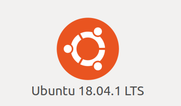Branch
Branch 1.3. Cloned from github mirror.
 Remote input
Remote input
Remote input example video.
 File Transfer (Desk2App)
File Transfer (Desk2App)
Solved. Firstly, I should have given the app access to files on my phone :| ...
Then, the "Send to ..." button isn't just there in standard file browser, but in Dolphin everything works just fine.
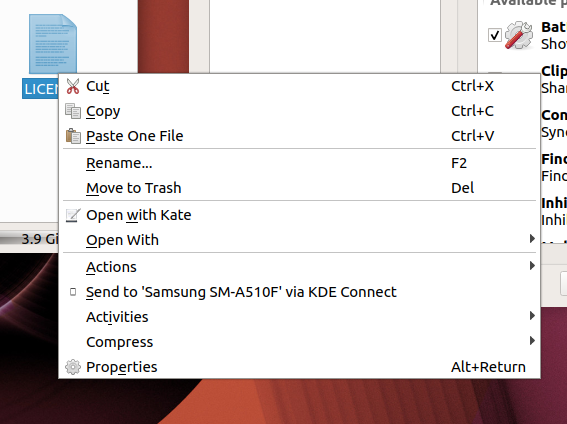  File Transfer (App2Desk)
File Transfer (App2Desk)
App2Desk doesn't work. The file is successfully sent from the app, but on the desktop, you get just ~40% and it just stalls.
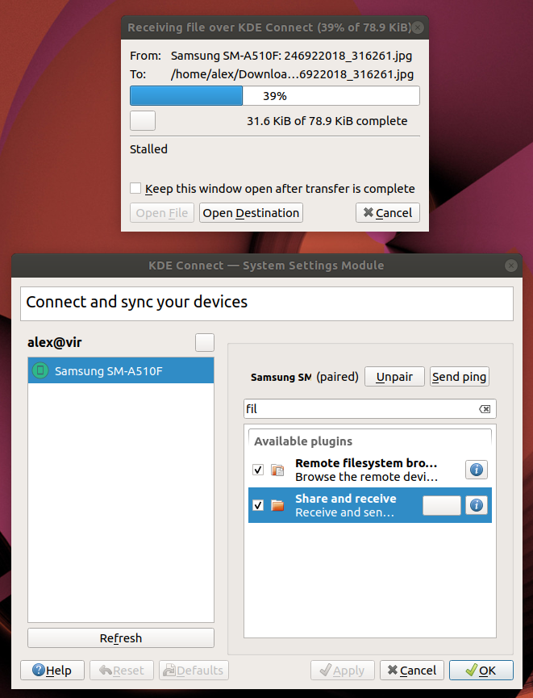Original image (memez):
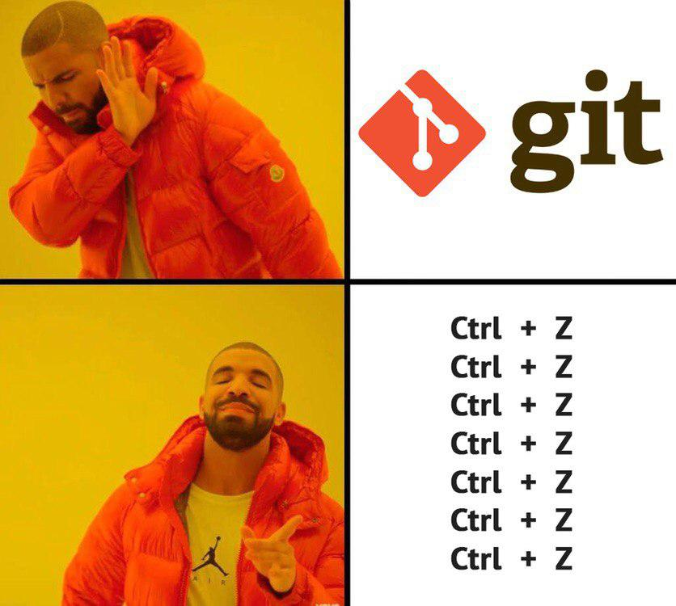The result (if cancelled, else it just doesn't do anything):

UPD
The issue is still present, tried rebuilding, reinstalling and restarting - nothing helped. Here is a screenshot of the stalled transfers of five different files.
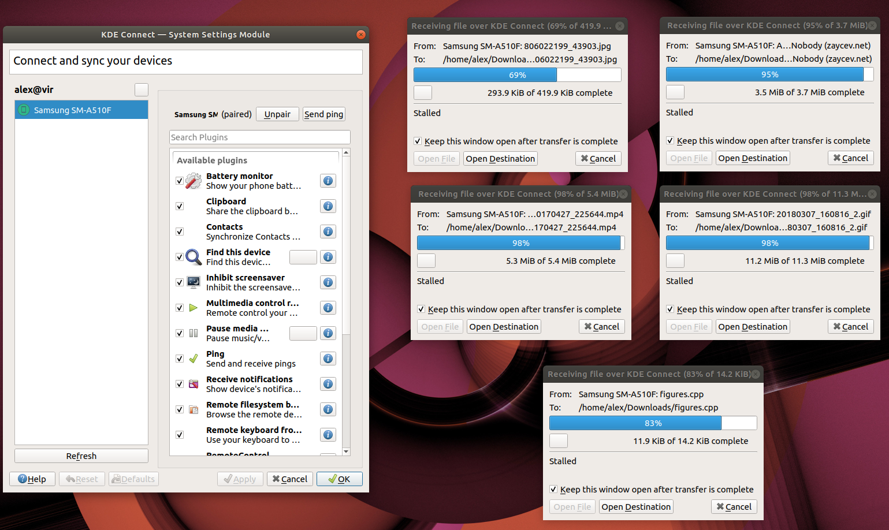However, using the Dolphin, connected to the device and drag&drop'ing files works fine:
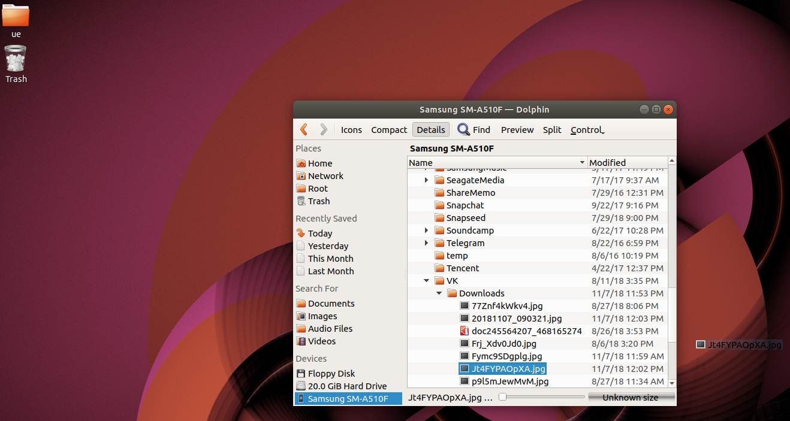 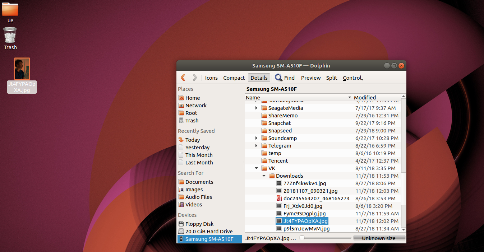  Reconnect (Desktop disruption)
Reconnect (Desktop disruption)
Works like a charm
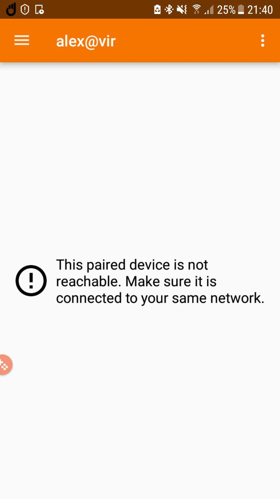 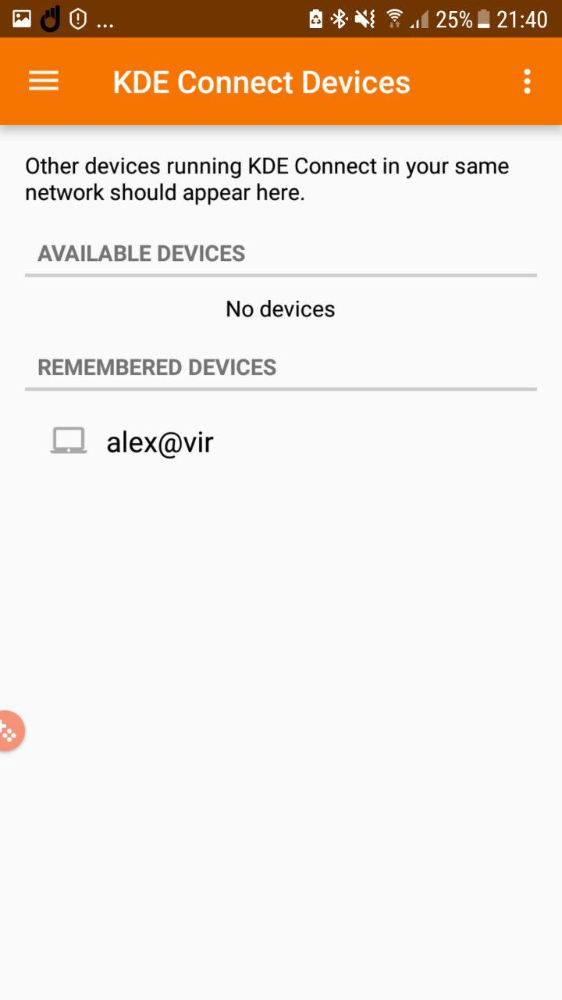 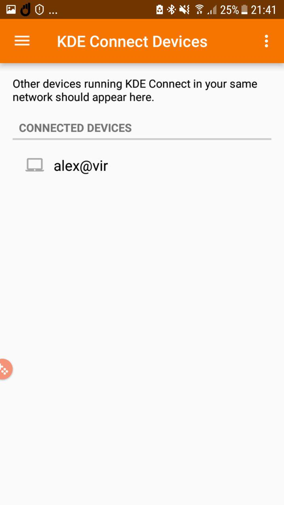  Reconnect (Phone disruption)
Reconnect (Phone disruption)
Works like a charm
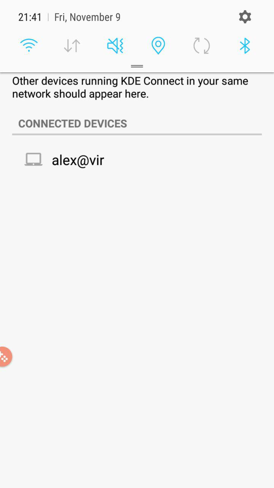 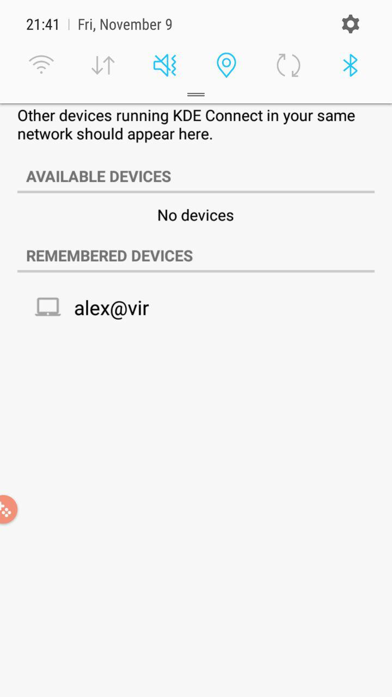 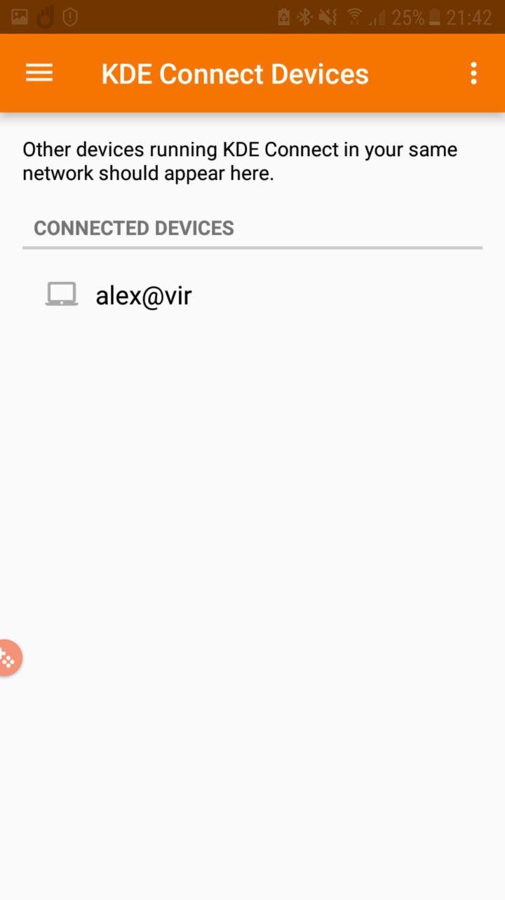